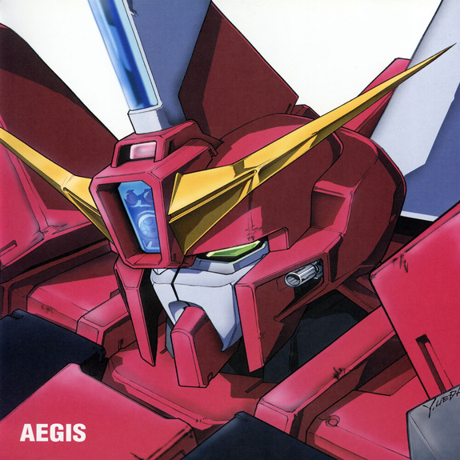
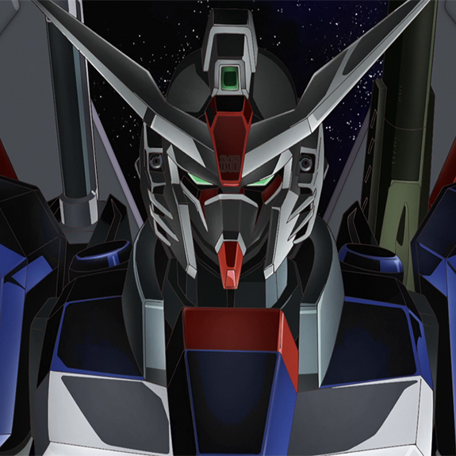

-
GAT-X303 Aegis Gundam
O GAT-X303 Aegis Gundam, unidade comandante do Projeto G da Aliança da Terra, destaca-se por sua comunicação e análise avançadas. Ele possui armadura Phase Shift e é capaz de se transformar em uma armadura móvel (MA) graças à sua estrutura da série X300. No modo MA, opera em dois submodos: 'Cruise' e 'Attack'. O 'Cruise Mode' oferece maior velocidade e aceleração, enquanto o 'Attack Mode' permite destruir naves ou trajes móveis com o canhão "Scylla" 580mm ou com seus quatro membros articulados. Suas armas adicionais incluem dois CIWS montados na cabeça, um rifle de raio portátil, um escudo e sabres de raio.
atk/ 2800 def/ 2500 -
E-X01 Aile Strike Gundam
O E-X01 Aile Striker é o pacote Striker mais comumente equipado para o Strike, pois fornece a maior versatilidade. Graças aos poderosos propulsores vernier integrados ao Aile Striker, o Strike Gundam se torna um traje móvel de combate para todos os fins, com velocidade e manobrabilidade aprimoradas em comparação com suas capacidades básicas.
atk/ 2900 def/ 2300 -
ZGMF-X09A Justice Gundam

O ZGMF-X09A Justice Gundam é uma das cinco unidades ZGMF-X Gundam da ZAFT produzidas em C.E. 71, utilizando tecnologia dos Gundams capturados da Aliança. Projetado como um traje móvel de assalto, sua principal característica é a unidade Fatum-00 nas costas. Esse sistema serve como propulsor principal, proporcionando alta aceleração e mobilidade no 'Modo High Mobility Aerial Tactics (HiMAT)'. Além de voar na atmosfera, o Fatum-00 pode operar como unidade não tripulada ou subvoo. O Justice Gundam é armado com canhões de feixe e metralhadoras, combinando poder ofensivo e versatilidade.
ATK/ 3200 DEF/ 3000 -
ZGMF-X10A Freedom Gundam
O ZGMF-X10A Freedom Gundam é uma das unidades da série ZGMF-X da ZAFT, construída em C.E. 71 com tecnologia dos Gundams capturados da Aliança da Terra. Equipado com armadura de mudança de fase, possui CIWS, sabres de feixe, canhões de feixe de plasma, railguns, rifle de feixe e o poderoso 'Full Burst Mode', que combina essas armas simultaneamente. Suas asas traseiras permitem o "HiMAT Mode", aumentando a mobilidade na atmosfera e no espaço. O Freedom tem capacidades de voo completas e um sistema de mira avançado, o Multi Lock-on System, que permite atacar várias unidades ao mesmo tempo. Conhecido como um 'Mobile Suit Killer', seu desempenho impressionante exige reflexos rápidos e grande consciência espacial do piloto.
ATK/ 3500 DEF/ 3000 -
ORB-01 Akatsuki Gundam
O Akatsuki Gundam foi desenvolvido combinando o conhecimento dos engenheiros da Orb sobre o GAT-X105 Strike Gundam e seu sistema Striker Pack com novas tecnologias da Orb. Ele vem equipado com um sabre de feixe duplo, CIWS montado na cabeça, escudo de braço e rifle de feixe. Sua característica mais marcante é a armadura dourada "Yata-no-Kagami", exclusiva da classe dominante da Orb. Essa armadura espelhada desvia e reflete tiros de feixe, tornando o Akatsuki virtualmente imune a esse tipo de ataque. No entanto, ele ainda é vulnerável a armas físicas e corpo a corpo, justificando o uso do escudo como proteção adicional.
ATK/ 2400 DEF/ 3500 -
ZGMF-X42S Destiny Gundam
O ZGMF-X42S Destiny Gundam foi um MS de alta performance comissionado pelo Presidente Gilbert Durandal, incorporando tecnologias avançadas, algumas proibidas pelo Tratado Junius. Baseado no ZGMF-X56S Impulse Gundam e nos dados de combate de Shinn Asuka, foi projetado para enfrentar qualquer situação de combate com um conjunto variado de armamentos. Para combate corpo a corpo, tinha dois bumerangues de feixe que também funcionavam como sabres de feixe, dois canhões de feixe de palma e uma grande espada de feixe. Para combate à distância, estava equipado com um canhão de feixe de longo alcance e um rifle de feixe. Para defesa, possuía um pequeno escudo físico e dois geradores de escudo de feixe. Além disso, contava com um conjunto padrão de CIWS montado na cabeça.
ATK/ 3000 DEF/ 2400 -
GFAS-X1 Destroy Gundam
Como seu nome sugere, o GFAS-X1 Destroy Gundam foi projetado para um único propósito: destruição maciça. Quase três vezes maior que um MS médio, ele pode destruir uma unidade inimiga apenas pisando nela. Equipado com um vasto arsenal de armas, ele pode devastar sozinho uma grande cidade como Berlim ou eliminar um exército de unidades móveis e naves de apoio. Sua designação, "GFAS-X", significa "Gressorial Fortress Armament Strategic - EXperimental".
ATK/ 6000 DEF/ 5500